ホーム > まいにち つづける
まいにち つづける
1日1文字のチャレンジ表、100日カレンダー、観察日記、絵本づくりなど、毎日少しずつ続けるためのシートです。大きなぬりえは4枚を貼り合わせて使います。
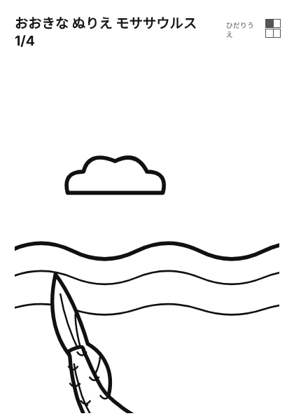
おおきなぬりえ モササウルス 1/44まいを つなげて 1まいの えに(左上)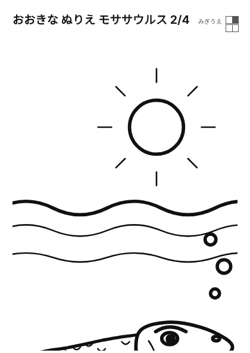
おおきなぬりえ モササウルス 2/44まいを つなげて 1まいの えに(右上)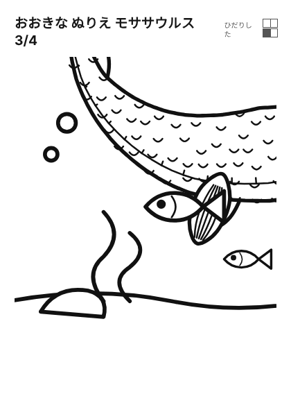
おおきなぬりえ モササウルス 3/44まいを つなげて 1まいの えに(左下)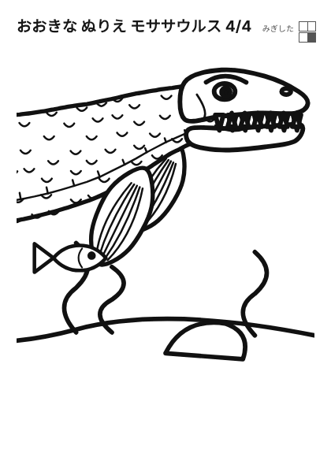
おおきなぬりえ モササウルス 4/44まいを つなげて 1まいの えに(右下) おおきなぬりえ おしろ 1/44まいを つなげて 1まいの えに(左上)
おおきなぬりえ おしろ 1/44まいを つなげて 1まいの えに(左上) おおきなぬりえ おしろ 2/44まいを つなげて 1まいの えに(右上)
おおきなぬりえ おしろ 2/44まいを つなげて 1まいの えに(右上)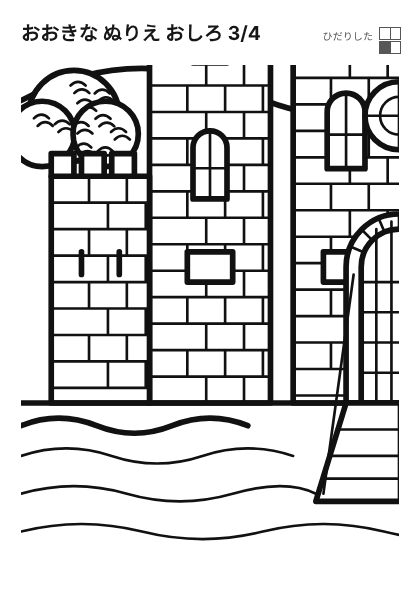
おおきなぬりえ おしろ 3/44まいを つなげて 1まいの えに(左下) おおきなぬりえ おしろ 4/44まいを つなげて 1まいの えに(右下)
おおきなぬりえ おしろ 4/44まいを つなげて 1まいの えに(右下) おおきなぬりえ ティラノサウルス 1/44まいを つなげて 1まいの えに(左上)
おおきなぬりえ ティラノサウルス 1/44まいを つなげて 1まいの えに(左上)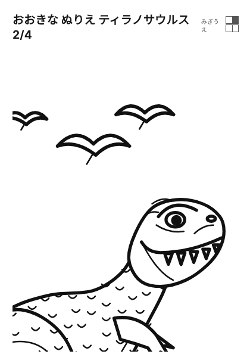
おおきなぬりえ ティラノサウルス 2/44まいを つなげて 1まいの えに(右上)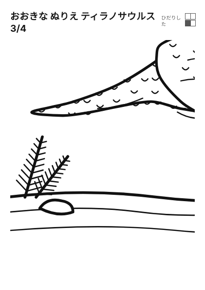
おおきなぬりえ ティラノサウルス 3/44まいを つなげて 1まいの えに(左下)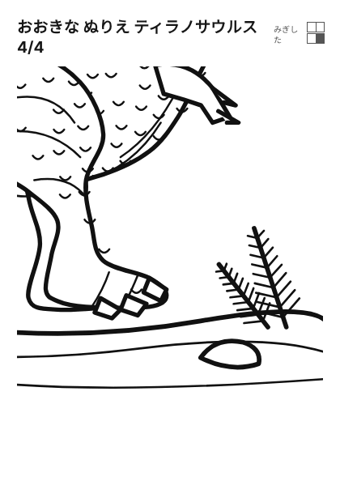
おおきなぬりえ ティラノサウルス 4/44まいを つなげて 1まいの えに(右下)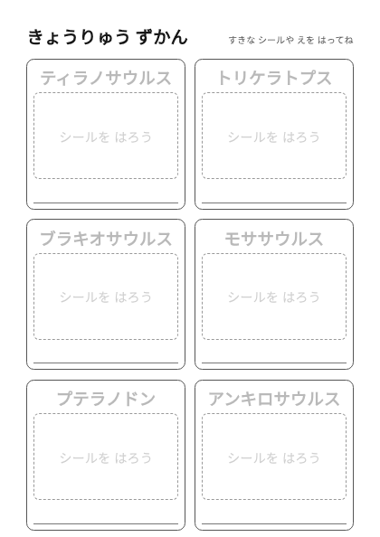
きょうりゅう ずかんシールを はって 名前を なぞる図鑑ページ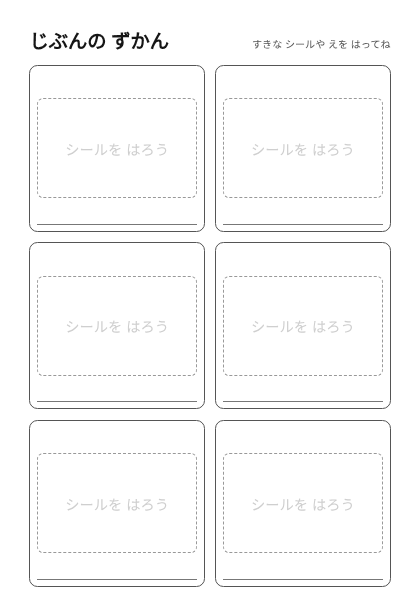
じぶんの ずかん(白紙)好きな生きものを自分で書く図鑑ページ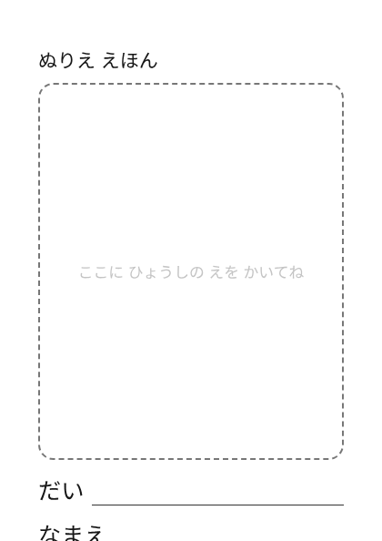
ぬりえ えほん ひょうしぬりえを重ねて ホチキス留め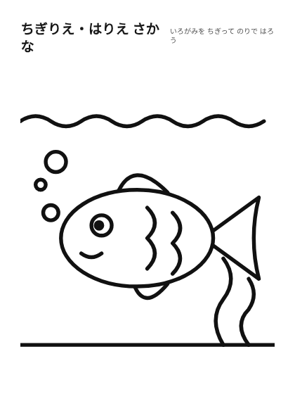
ちぎりえ・はりえ さかな色紙をちぎって貼る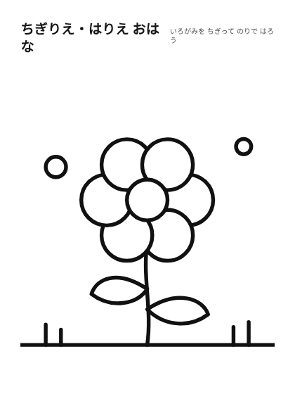
ちぎりえ・はりえ おはな色紙をちぎって貼る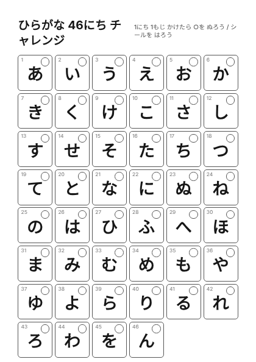
ひらがな 46にち チャレンジ1日1文字 書けたらチェック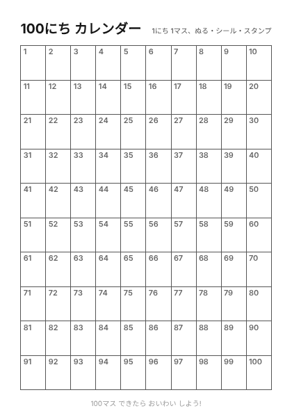
100にち カレンダー1日1マス ぬる・シール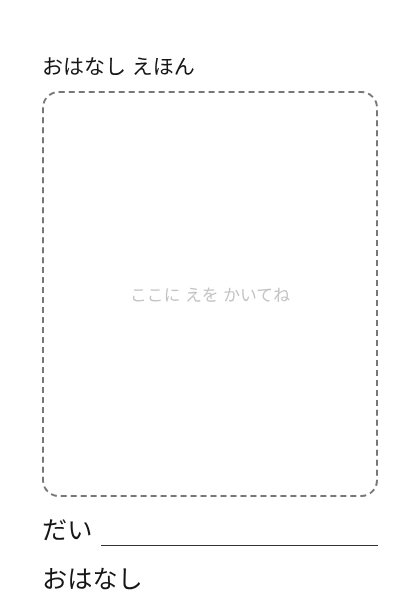
おはなし えほん ひょうしお話づくり絵本の表紙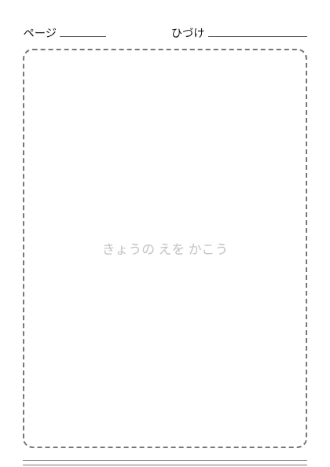
おはなし えほん ページ1日1ページ・絵と3行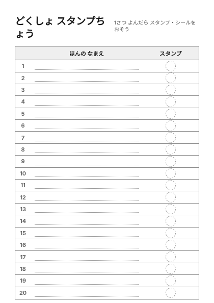
どくしょ スタンプちょう20さつ分 スタンプ・シール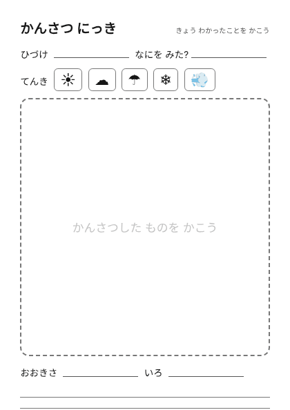
かんさつ にっき豆・ひまわり・季節の観察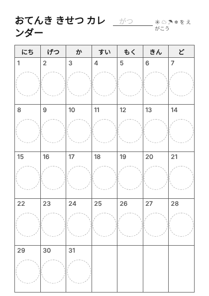
おてんき きせつ カレンダー1か月ぶん 毎日1マス
使い方
- 続けたい日数やテーマに合うシートを選んで印刷します。
- 毎日1マスずつ、色をぬったりシールを貼ったりします。
- 全部できなくても大丈夫です。できた日だけ記録します。